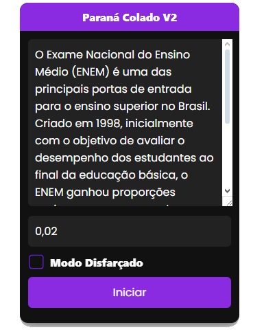
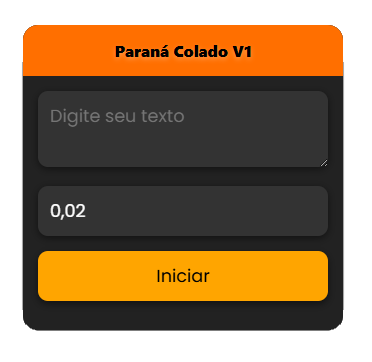
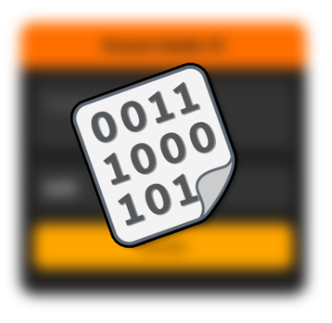
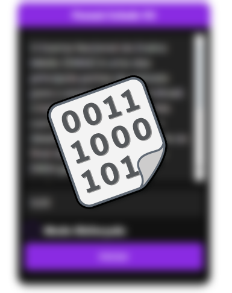

Versão 1.0
Escrever cansa...
Vamos se gabar para aquele professor chato que não acredita em você?
Manda um CTRL C + CTRL V
E do resto, pode deixar que a gente cuida de tudo!

Versão 2.0

VERSÃO 1
Adora uma adrenalina ou quer tomar bronca do seu professor em sala de aula?
(Ou talvez só queira uma versão simplificada do script)
VERSÃO 2
Perfeita para usar nos computadores da escola! Possui o modo "stealth", onde ela se camufla no site do GOV.PR.

Paraná Tools